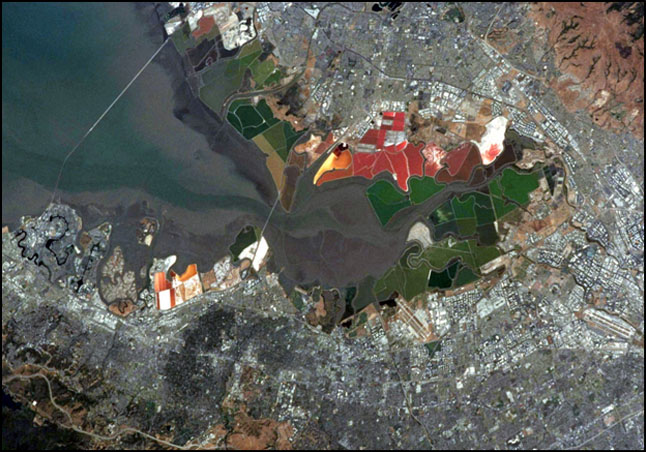
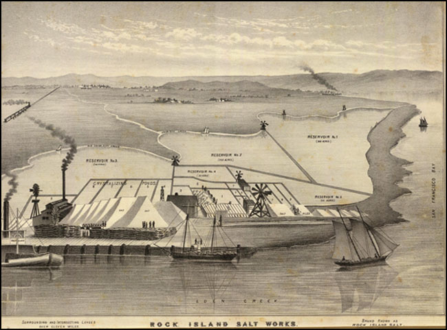

This website is no longer updated and has been replaced with a static copy. The Spatial History Project was active at Stanford University from 2007-2022, engaging in dozens of collaborative projects led by faculty, staff, graduate students, post-docs, visiting scholars and others at Stanford and beyond. More than 150 undergraduate students from more than a dozen disciplines contributed to these projects. In addition to a robust intellectual exchange built through these partnerships, research outputs included major monographs, edited volumes, journal articles, museum exhibitions, digital articles, robust websites, and dozens of lightweight interactive visualizations, mostly developed with Adobe Flash (now defunct). While most of those publications live on in other forms, the content exclusive to this website is preserved in good faith through this static version of the site. Flash-based content is partially available in emulated form using the Ruffle emulator.
Publications > Table of Contents > From Salt Ponds to Refuge in San Francisco Bay
Spatial History Lab: Working paper; Submitted 1 August 2010
From Salt Ponds to Refuge in San Francisco Bay
Matthew Booker 1 & Michael De Groot 2 & Kathy Harris 3
1. North Carolina State University, Assistant Professor
2. Stanford University, Spatial History Lab, Research Assistant
3. Stanford University, Spatial History Lab, Lab Manager
Fly into any Bay Area airport, and a singular view dominates the landing approach. Planes come in low over pools of still, shallow water. The pools placidly reflect nearby hills and the sky above. Still water stretches for miles along both shores of southern San Francisco Bay, walled off from the moving tides by thin mud levees. In contrast to the brown waters of the bay, the ponds are a series of shocking colors: lime green, neon orange, rusty red. The water looks artificially dyed, perhaps polluted by some industry. These placid pools are the production facilities of one of San Francisco Bay’s oldest industries, evaporative salt mining. Salt ponds have occupied parts of south San Francisco Bay’s tidal margin for nearly 150 years. They offer remarkable continuity amidst an urban explosion that has added six million people in the last century.
2
Figure 1. San Francisco Bay south of the San Mateo Bridge
Photographed by crew of the Space Shuttle, June 2002. NASA STS111-376-3.

3
What is not visible from the air is ownership. These salt ponds are managed as bird habitat rather then for salt production. On a fall or winter day the ponds are covered with birds, many of them migrants en route from the Arctic or South America. These ponds constitute the San Francisco Bay National Wildlife Refuge, the nation’s first and most extensive urban wildlife refuge. Since the 1960s, the federal government has been buying the salt ponds and converting them to bird habitat. What in the 1960s was a vast salt mine is now largely a refuge.
4
The vanishing salt ponds and the rise of the refuge suggest a circular story: from industrial to wild, from private to public. But the story is not as simple as it seems. From the air, commercial salt ponds and refuge property were nearly indistinguishable. Salt mines and bird habitat looked the same, but belonged to different parties with distinct intentions. Mining corporations used the ponds to produce raw materials for industry. Refuge managers regarded their ponds as wildlife habitat. For most of the past three decades, the two uses have been compatible. One view of the ponds looked backward to the mining era that brought Americans to this bay. Another preserved open space and bird feeding grounds. But over time, refuge managers came to see the ponds not as productive spaces, but as spaces of opportunity. By restoring tidal flow to the ponds, ecologists hoped to produce salt marshes, a higher quality habitat. How this odd and productive combination of private and public, salt mine and wildlife refuge, is one of the central stories of the San Francisco Bay area. The story of the refuge and its growth illustrates the rise and evolution of ecological thinking as well as the persistence of industrial production in the region’s key natural feature, the bay itself.
5
Salt Ponds
Salt mining is one of the first industries in California. For millennia Native people harvested salt in seasonal ponds along the eastern shore of San Francisco Bay, using it in cooking and trading it to inland peoples. Up to 1848, Spanish and Mexican Californios continued collecting an annual supply for local use. But the Gold Rush provided huge new markets for salt. Gold and silver miners used salt and mercury to extract metal from raw ore. By 1857, a permanent salt industry had developed among the marshes near what is now the eastern footing of the San Mateo Bridge. In that year, a salt maker first enclosed his salt ponds with a levee to regularize production.
6
Figure 2. Salt works near present-day Hayward, California
From Thompson & West, Official and Historical Atlas Map of Alameda County, California (Oakland, 1878)

7
These salt ponds created a new kind of bay environment. Unlike the natural “pannes” where bay water trapped by the year’s highest tides evaporated, the salt ponds were walled off from the bay by mud levees. As ecologist Lars Carpelan noted in 1958, diking the salt ponds created environments more like inland salt lakes than the estuarine waters a few meters away across the barrier of the dike. By removing tidal action the dikes made ocean waters into salt lakes, San Francisco Bay into the Salton Sea. By simply building mud walls, humans radically changed the entire energy flow and function of the bay edge.
8
In the early twentieth century Leslie Salt Company incorporated to swallow all of the small, often family-owned salt producers. Eventually Leslie Company levees captured much of the south bay. Leslie combined the ponds on both sides of the bay into a single integrated unit, complete with an underwater plumbing system that pumped salty brine to the evaporating plant near Newark. By the 1940s, Leslie Salt Company became the largest private land owner in San Francisco Bay. As population increased and open space shrunk, the company’s directors sought to convert low-margin salt ponds into high-value real estate. After World War II the company spun off a real estate development company and built two Florida-style housing tracts, Redwood Shores and Foster City, on thousands of acres of filled salt ponds and marsh. Faced with the disappearance of much of the remaining open space along the bayshore, a popular movement opposed further development. In 1968 the state created a new agency to regulate development on state-owned land, but it had little power over Leslie Salt Company. Nor were the plethora of city and county governments capable of coordinating a policy for future development. So a coalition of conservationists and planners determined that only the federal government had the regulatory authority, institutional capacity, and the money to supplant Leslie Salt Company in the tidelands.
9
San Francisco Bay National Wildlife Refuge
In 1972 Congress passed and President Nixon signed a bill authorizing establishment of a San Francisco Bay National Wildlife Refuge. Two years later the United States Fish and Wildlife Service acquired its first acreage for the refuge, 37 acres from a trucking company. In 1977 the refuge added 77 acres near the east end of Dumbarton Bridge for a headquarters and visitor’s center. That same year the refuge acquired its first substantial holdings; 91 acres on Bair Island, across the bay in San Mateo County, and 3,252 acres in Santa Clara County, site of the ghost town of Drawbridge, California.
10
Figure 3. South San Francisco Bay Salt Pond Acquisition History
11
Not until 1979 did the refuge acquire its first salt ponds, through condemnation of more than 15,000 acres of Leslie Company property. As the condemnation was underway, Leslie sold all of its property to Cargill Corporation, the world’s largest privately owned corporation. The refuge bought the legal title to the salt ponds, but Cargill retained mineral rights, and with them, actual management of the ponds. By 1986, the refuge owned approximately 17,000 acres, most of it the 15,000 acres of ponds where Cargill continued to manufacture and harvest salt. Much of the bay shoreline, though increasingly owned by the federal government, remained a space for industrial production. Further, Cargill retained full rights to its industrial plant in Newark and its shipping facilities in Redwood City. These were both the guarantee of future salt production and the spaces the Leslie Company had threatened to fill for industrial and residential property.
12
In 1988 Congress authorized the refuge to expand further. Between donations of small parcels from conservation groups and transfers of state-owned tidelands and marshes, the refuge expanded to over 25,000 acres. Over the decades, the refuge came together like a colorful mosaic, patches of land and water slowly merging into a coherent whole. A dramatic change came in 2003, when state and federal agencies brokered a complicated and ambitious plan to restore critical wetland habitat for endangered marsh species in San Francisco Bay. The agreement provided tens of millions of dollars to purchase the mineral rights to all refuge lands and some 5000 acres of Cargill’s remaining salt ponds. While Cargill retained several thousand acres of salt ponds and refining and shipping facilities near Redwood City, the San Francisco Bay National Wildlife Refuge now controlled most of the shallow waters of San Francisco Bay’s margin south of the San Mateo Bridge.
13
Figure 4. Establishment of South San Francisco Bay Salt Ponds and Refuges, 1857 to 2004
14
The 2003 agreement did more than simply expand the refuge and make the federal government the undisputed owner of most of San Francisco Bay’s margin. It fundamentally transformed the purpose of the refuge itself. For the generation of activists and legislators who founded the wildlife refuge in 1972, the great danger was that Leslie would fill its ponds and marshes. Even if salt companies continued to mine the ponds, federal ownership would be sufficient to preserve open space. But by 2003, ecological scientists in the Bay Area were concerned about the fate of a suite of species dependent on tidally influenced salt marshes. The federal government now owned most of the South Bay shoreline, but that shoreline was not marsh, it was mud walls protecting shallow pools. For refuge managers and the ecological community in 2003, the importance of owning tens of thousands of acres was not their role as bird feeding areas but rather as potential salt marsh. Break the levees, open the ponds to the tides, and perhaps the marshes would return. In 1972 the point of the refuge had been to preserve nature by preventing fill. Change was bad. Now, thirty years later, the point of the refuge was to restore habitat lost when the ponds themselves were constructed. Change was good.
15
Conclusion
From the air, commercial salt ponds and refuge property were nearly indistinguishable. Evaporative salt pannes and bird habitat looked the same, but were owned by different parties with different intentions. Leslie, and its successor Cargill used the ponds to produce the raw material for industry. Refuge managers regarded their ponds as wildlife habitat, and over time, as potential sites to restore tidal wetlands.
16
In this project we mapped this evolving reality by showing how pond outlines remained the same, but over time were “filled” with different information. What had been salt ponds owned by a private corporation became feeding areas for birds. We depicted these changes in maps showing the dates of salt pond establishment and the years when ownership and mineral rights changed hands. The line graph effectively shows when the refuge added land. But it cannot capture the changing use of that land.
17
We have grown accustomed to using maps of ownership to define land use and degree of natural protection. Large swathes of green (why green?) on our maps depict federal refuges, state parks, and non profit conservation easements. These, we assume, are proxies for degree of protection and habitat values. But as we found in this project, it turns out that ownership may not be the best way to measure change on the bayshore. A private company mined salt ponds that also provided habitat for birds. So did a public refuge. And when the publicly owned refuge sought to transform its property into salt marsh, maps could not capture that transformation. The refuge grew in size, but it also changed fundamentally its purpose.
18
For seven decades San Francisco Bay’s shoreline was highly saline, a landscape of active salt ponds. Recent efforts to restore tidal flow to some of the salt ponds and thereby recreate salt marshes show a return to much less salty water, to levels not seen since the nineteenth century. These changes will not recreate the past. They will create some new landscape, a hybrid of past and present land uses, in which history will mingle with unpredictable nature to create some new landscape.
19
End Notes
1 Booker, Matthew. “Real Estate and Refuge: An Environmental History of San Francisco Bay’s Tidal Wetlands, 1846-1972.” Ph.D. Dissertation, Stanford University, 2005.
2 A. L. Kroeber, “Culture Element Distributions: XV Salt, Dogs, Tobacco” Anthropological Records 6: 1 (February 18, 1941), 1-6.
3 Alan K. Brown, “Salt for the Scraping: Origin of the San Francisco Bay Salt Industry,” California Historical Quarterly 36 (Winter 1960): 117-120.
4 May, Michael, Ruth Askevold, and Michael Wittner, “Detailed Project Map: South Bay Salt Pond Restoration Project” (Oakland: San Francisco Estuary Institute, May 30, 2006).
5 Mruz, Eric. Manager, San Francisco Bay National Wildlife Refuge. Personal communication, January 2010.
6 “To Provide for the Establishment of San Francisco Bay National Wildlife Refuge,” Public Law 92-330, 92nd Congress, H.R. 12143, June 30, 1972.
7 Stewart, Mendel. Project manager, San Francisco Bay National Wildlife Refuge. Personal communication, January 2010.
8 Watt, Laura A. “South Bay Salt Pond Restoration Project Historic Context Report” (Oakland, Cal.: EDAW Inc., August 25, 2005).